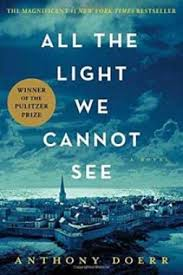

Discover a wide range of books categorized into different genres. Whether you love fiction, non-fiction, or mystery, there's something for everyone!
Fiction
Immerse yourself in imaginative stories and captivating characters.


- To Kill a Mockingbird by Harper Lee
- 1984 by George Orwell
- The Great Gatsby by F. Scott Fitzgerald
Non-Fiction
Explore real-world stories, biographies, and insightful knowledge
- Sapiens: A Brief History of Humankind by Yuval Noah Harari
- Becoming by Michelle Obama
- The Diary of a Young Girl by Anne Frank